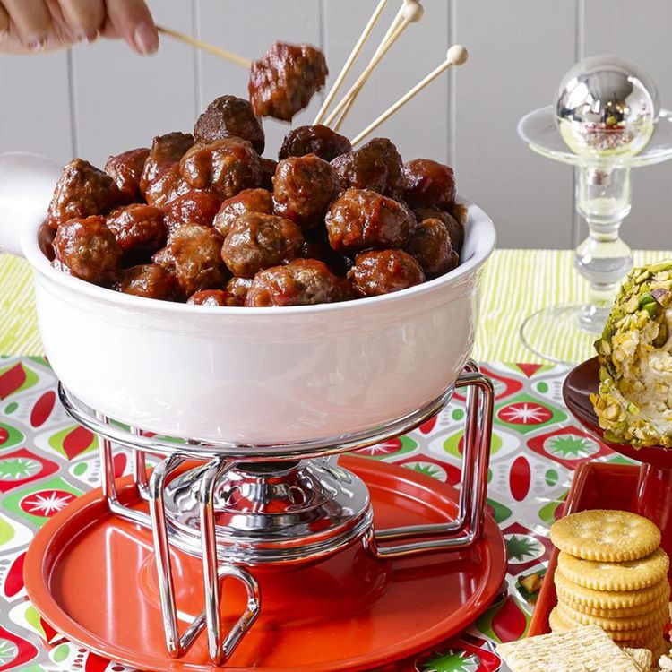

Cocktail Meatballs

Description
These tasty cocktail meatballs will disappear quickly at your holiday party. My mom makes them every year for New Year's Eve, and now so do I. These do very well in a slow cooker, as you can simmer them before serving and keep them hot for the duration of your party.
Ingredients
- 1 pound lean ground beef
- 1/2 cup bread crumbs
- 3 tablespoons minced onion
- 2 tablespoons water
- 1 large egg
- 1 (8 ounce) can of jellied cranberry sauce
- 3/4 cup chili sauce
- 1 tablespoon brown sugar
- 1 1/2 teaspoons lemon juice
Steps
- Gather the Ingredients and preheat the oven to 350F.
- Mix ground beef, bread crumbs, onion, water, and egg together in a large bowl. form into small meatballs and arrange on a nonstick baking sheet. Bake in the preheated oven for 20-25 minutes, turing once.
- Stir cranbery sauce, chili sauce, brown sugar, and lemon juice together in large saucepan over low heat until smooth. Add meatballs; simmer for 1 hour before serving.